David Flores
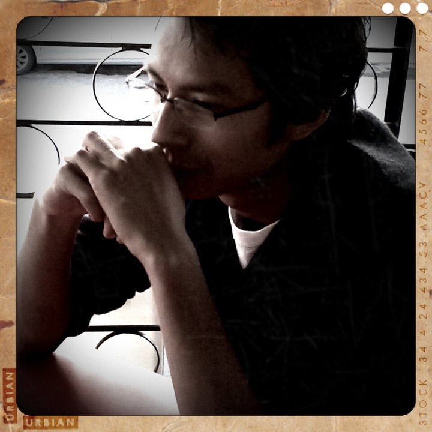Twitter: @dmouse
Jorge Ram
Twitter: @jeyram7
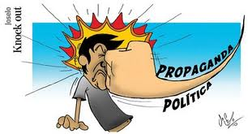
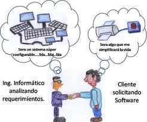
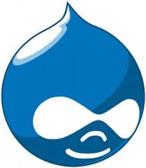
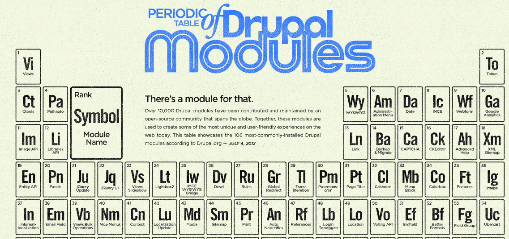
Es el "Query Builder" de Drupal, uno de los módulos que permite crear consultas a la base de datos y definir como se mostrarán los resultados.
Permite tomar el control de como será desplegado el contenido, usando una interface "drag and drop" asi como ordenar nodos, views, comments, user data, entre otras características.
Si views es el "Query Builder" Panels es el "Page builder". Panels permite definir páginas, definir los elemetos que se imprimen en dichas páginas así como agregar reglas de visibilidad y de acceso desde una interfaz gráfica.
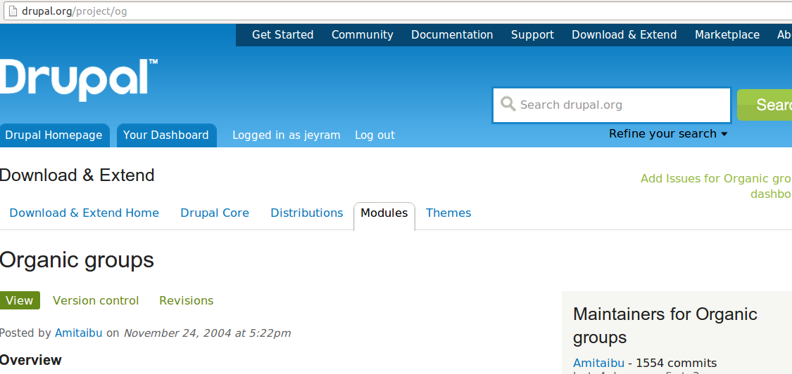
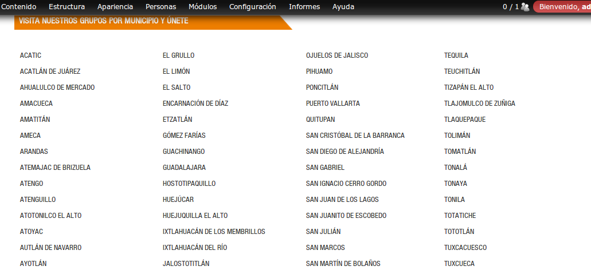
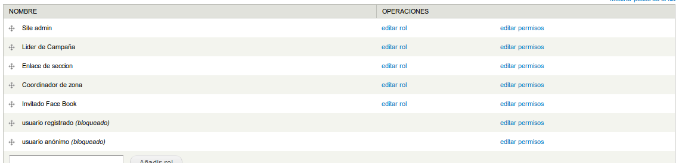
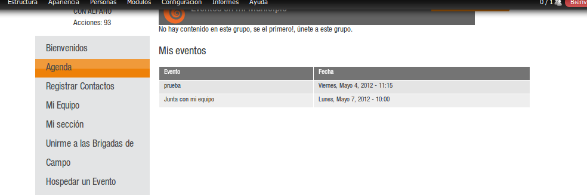
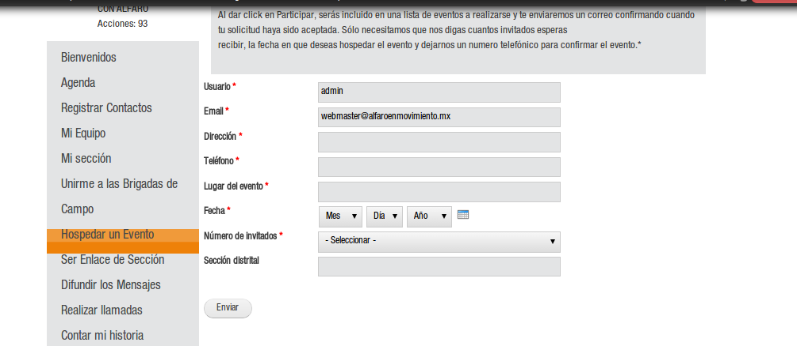
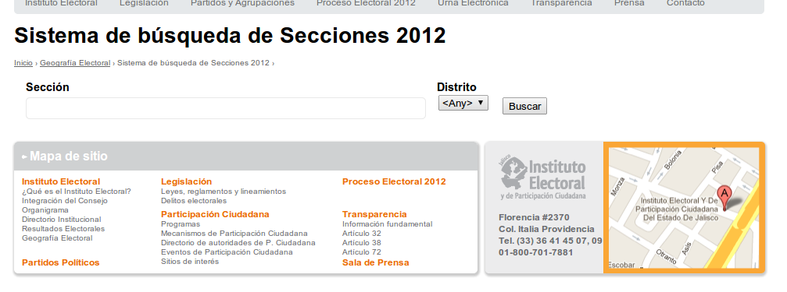
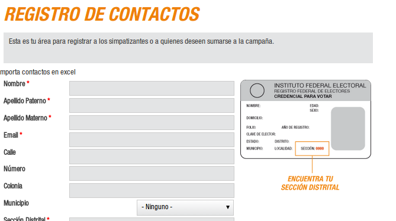
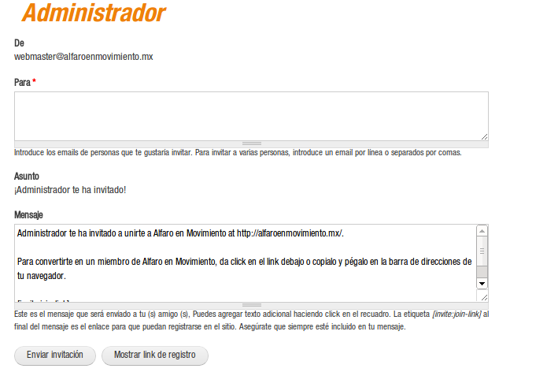
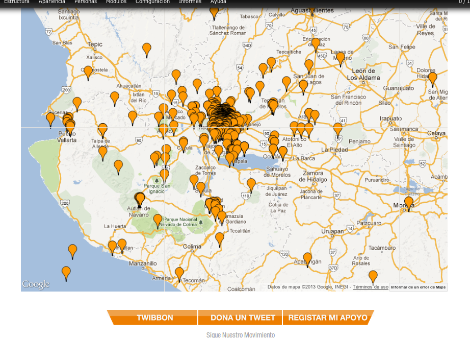
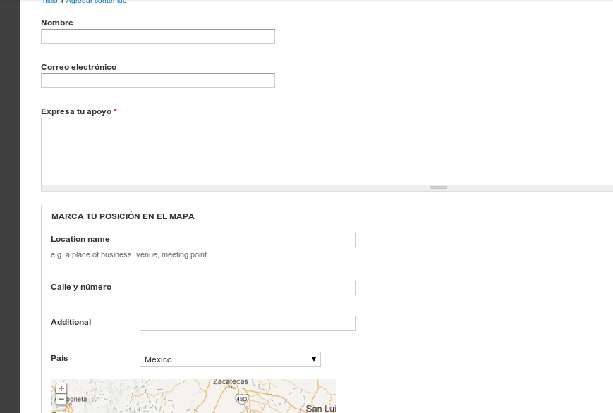
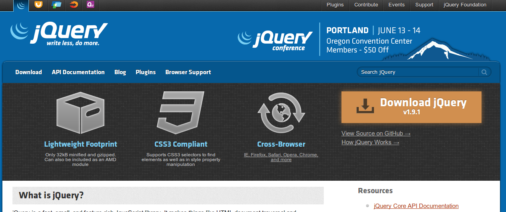
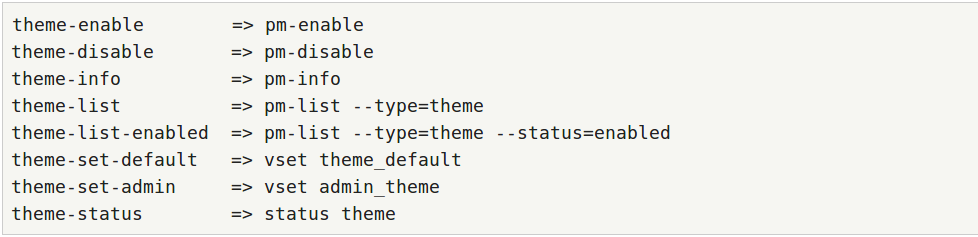
¿Ya les dijeron que instalen Drush?
Slides realizadas con kinout
kinout on github
Fonts Bitter & Open Sans
Open Sans at google webfont directory
Bitter at google webfont directory
David Flores | @dmouse | http://dmouse.net
Jorge Ram | @jeyram7 | http://axai.com.mx